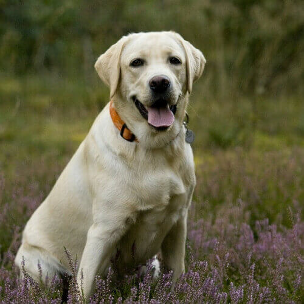
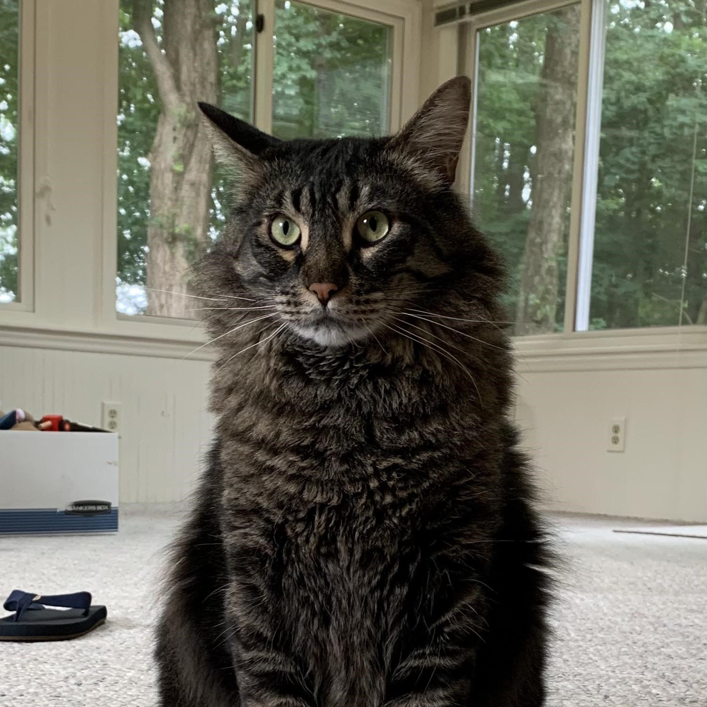
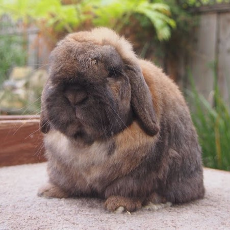
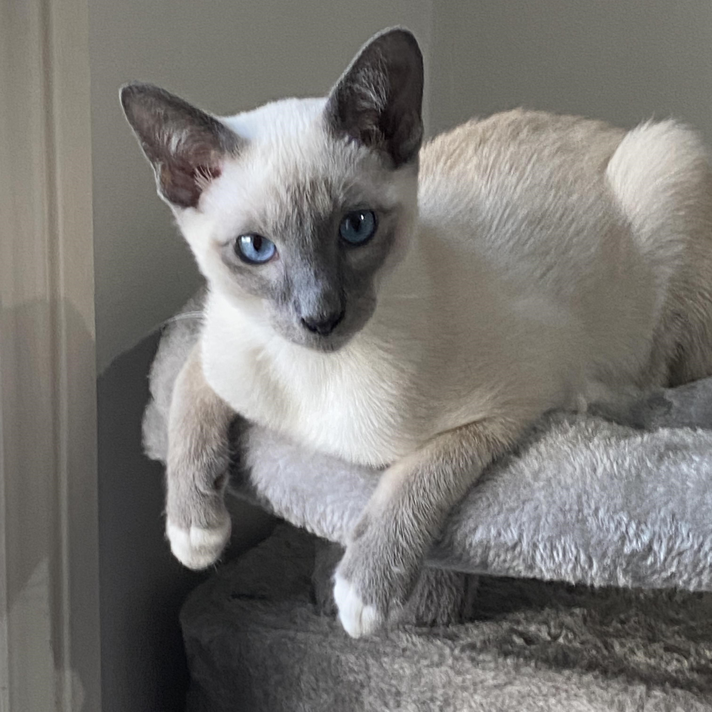

Max
- Breed: Golden Retriever
- Gender: Male
- Age: 5 years
- Weight: 70 lbs
- Coat & Color: Thick, wavy golden coat with a white chest patch
- Personality: Loyal, gentle, always happy to meet new people
- Favorite Activities: Swimming, playing fetch, carrying things in his mouth
- Health Notes: Healthy but needs joint supplements for future arthritis prevention
- Quirks: Sleeps on his back with all four paws in the air, loves belly rubs

Whiskers
- Breed: Maine Coon
- Gender: Female
- Age: 6 years
- Weight: 18 lbs
- Coat & Color: Long, thick brown fur with white paws
- Personality: Gentle giant, laid-back but loves attention
- Favorite Activities: Climbing to the highest spot in the house, chasing laser pointers
- Health Notes: Prone to matting; gets weekly brushing sessions
- Quirks: Loves sleeping in the sink, chirps instead of meowing

Thumper
- Breed: Holland Lop
- Gender: Male
- Age: 2.5 years
- Weight: 3.5 lbs
- Coat & Color: Soft fawn-colored fur with white markings
- Personality: Playful, curious, enjoys cuddling once comfortable
- Favorite Activities: Hopping around the living room, chewing cardboard boxes, digging in blankets
- Health Notes: Teeth need regular monitoring to prevent overgrowth
- Quirks: Loves flopping over dramatically when tired, will nudge you for head rubs

Luna
- Breed: Siberian Husky
- Gender: Female
- Age: 3 years
- Weight: 48 lbs
- Coat & Color: Thick, fluffy black-and-white coat with icy blue eyes
- Personality: Playful, mischievous, stubborn but loving
- Favorite Activities: Running, playing in the snow, digging holes in the yard
- Health Notes: Slightly prone to hip dysplasia; on a high-protein diet
- Quirks: Howls back when you talk to her, tries to “escape” from the yard for adventure
Cleo
- Breed: Siamese
- Gender: Female
- Age: 4 years
- Weight: 18 lbs
- Coat & Color: Sleek, short cream-colored coat with dark brown points
- Personality: Very vocal, needy, affectionate with her favorite human
- Favorite Activities: Sitting on laptops, knocking things off tables, playing fetch
- Health Notes: Slightly sensitive stomach; eats a grain-free diet
- Quirks: Will “talk” back whenever spoken to, insists on sleeping on her owner’s pillow

Oscar
- Breed: Dachshund
- Gender: Male
- Age: 2 years
- Weight: 12 lbs
- Coat & Color: Short-haired red coat with floppy ears
- Personality: Bold, curious, a little stubborn but very affectionate
- Favorite Activities: Digging in blankets, chasing squeaky toys, burrowing in warm places
- Health Notes: Prone to back issues; needs weight management to prevent spine problems
- Quirks: Loves barking at bigger dogs as if he’s 100 lbs, sits on top of pillows like a king